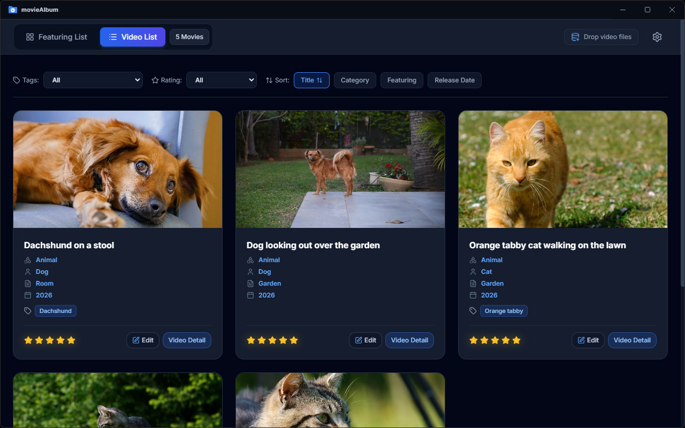

About TagPlayer
TagPlayer is a music player for Windows featuring a flexible tagging system.
While standard music players allow you to organize albums and songs by categories such as "Genre,"
"Album Artist," "Artist," or "Release Year," they typically restrict each field to a single value.
Consequently, it has been difficult to address needs such as:
- Ensuring that an album or song belonging to multiple genres can be accessed through any of those categories.
- Listening to music from a specific era or region, regardless of genre.
- Creating custom categories—such as "Live Recording"—tailored to your personal preferences.
TagPlayer makes all of this possible through its tagging functionality.
Key Features
- Includes tag groups for "Genre," "Artist," "Release Year," "Composer," and "Other."
- Automatically retrieves album art, genre, album artist, release year, artist, and composer information when adding an album.
- Allows users to define custom tags in addition to those retrieved automatically.
Download TagPlayer today and enjoy a richer music experience!

Supported file types
- mp3
- m4a
- flac
- wma
- etc.
Update History
- version 1.0.0
-
- Switching configuration files is now supported.
- Initial release.
Privacy Policy
- This app does not collect, store, or transmit any personal data.
- No information is shared with external servers or third parties.